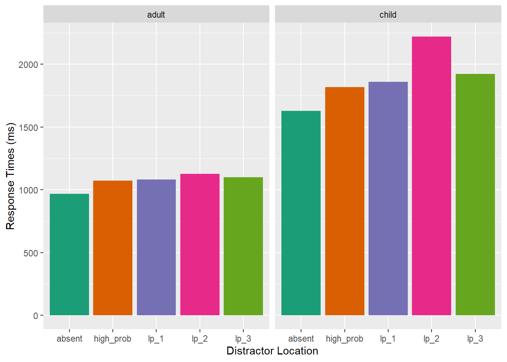
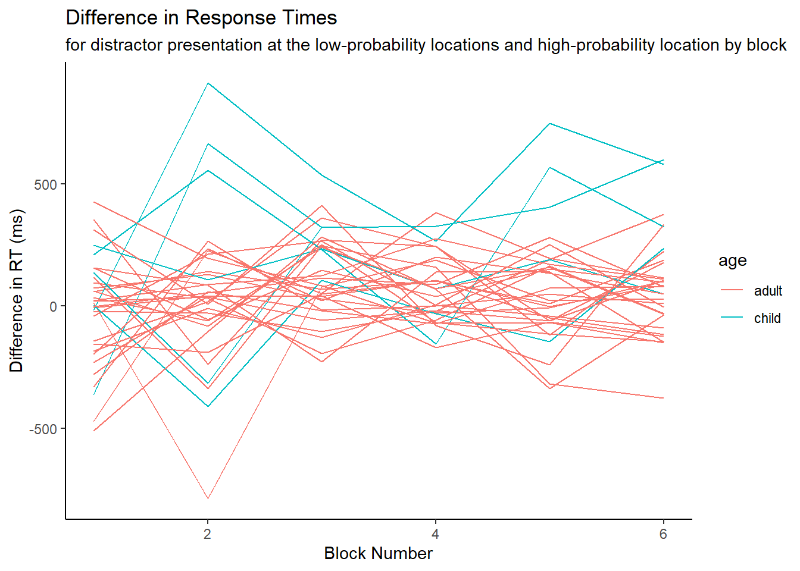
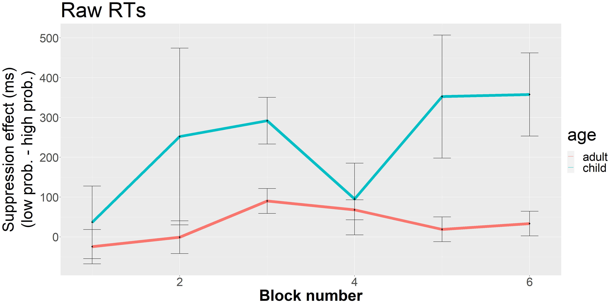

Portfolio 8
3.21.2023
The goal of this portfolio is to examine part of my thesis data. To recap, my thesis is examining distractor suppression in children and adults. Participants are shown a distractor in a location more frequently than other locations in a visual search array. Based on previous studies, we would expect adults to suppress their attention to the high-probability location, but we were unsure when in development children develop this ability.
library(tidyverse)
library(tidyr)
library(rstatix)
library(data.table)
library(afex)
library(emmeans)
library(psych)
library(ggprism)
library(patchwork)
library(magrittr)
library(cowplot)I put all the messy loading in of different data sets and adding in important columns to an R script instead of having it here.
Trim the Data
Calculate the overall means and standard deviations for each age group to determine the cutoff for response times.
aggregate(rt ~ acc, data = adults, FUN = mean)## acc rt
## 1 0 1036.116
## 2 1 1126.754aggregate(rt ~ acc, data = adults, FUN = sd)## acc rt
## 1 0 610.4570
## 2 1 668.7103aggregate(rt ~ acc, data = kids12, FUN = mean)## acc rt
## 1 0 851.4179
## 2 1 2130.8040aggregate(rt ~ acc, data = kids12, FUN = sd)## acc rt
## 1 0 1357.789
## 2 1 2727.995aggregate(rt ~ acc, data = kids6, FUN = mean)## acc rt
## 1 0 201.1421
## 2 1 3112.2998aggregate(rt ~ acc, data = kids6, FUN = sd)## acc rt
## 1 0 951.0326
## 2 1 3594.9864Define trimming criteria according to Van Selst and Jolicoeur 1994.
xsize <- c(4, 5, 6, 7, 8, 9, 10, 11, 12, 13, 14, 15, 20,
25, 30, 35, 50, 100)
stds <- c(1.458, 1.68, 1.841, 1.961, 2.05, 2.12, 2.173,
2.22, 2.246, 2.274, 2.31, 2.326, 2.391, 2.41, 2.4305,
2.45, 2.48, 2.5)Trim the data and compute the percent trimmed
trimmedA <- adults[adults$acc==1, ] %>% group_by(id, relative_hp_dist) %>%
mutate(sdc = ifelse(length(rt)>=100,2.5,approx(xsize,stds,xout=length(rt))$y), avg = mean(rt), stdev = sd(rt)) %>%
filter(rt <= sdc*stdev+avg & rt >=avg-(sdc*stdev) & rt >=200 & rt<=2500) %>% #exact upper limit =2464.175
select(id, age, relative_hp_dist, rt, block_num) %>% #keep these columns in the new data frame
as.data.frame()
statPrep <- trimmedA %>% group_by(id, relative_hp_dist) %>% summarise(measurement=mean(rt)) %>% as.data.frame()## `summarise()` has grouped output by 'id'. You can override using the `.groups`
## argument.100-(nrow(trimmedA)/nrow(adults[adults$acc==1, ]))*100## [1] 5.1007565.10% of trials were trimmed from the adult data set.
trimmedC12 <- kids12[kids12$acc==1, ] %>% group_by(id, relative_hp_dist) %>%
mutate(sdc = ifelse(length(rt)>=100,2.5,approx(xsize,stds,xout=length(rt))$y), avg = mean(rt), stdev = sd(rt)) %>%
filter(rt <= sdc*stdev+avg & rt >=avg-(sdc*stdev) & rt >=200 & rt<=7590) %>% #exact upper limit =7586.794
select(id, age1, relative_hp_dist, rt, block_num1) %>% #keep these columns in the new data frame
as.data.frame()
statPrep <- trimmedC12 %>% group_by(id, relative_hp_dist) %>% summarise(measurement=mean(rt)) %>% as.data.frame()## `summarise()` has grouped output by 'id'. You can override using the `.groups`
## argument.100-(nrow(trimmedC12)/nrow(kids12[kids12$acc==1, ]))*100## [1] 4.6397384.64% of trials were trimmed from the older child data set.
trimmedC6 <- kids6[kids6$acc==1, ] %>% group_by(id, relative_hp_dist) %>%
mutate(sdc = ifelse(length(rt)>=100,2.5,approx(xsize,stds,xout=length(rt))$y), avg = mean(rt), stdev = sd(rt)) %>%
filter(rt <= sdc*stdev+avg & rt >=avg-(sdc*stdev) & rt >=200 & rt<=18950) %>% #exact upper limit =18929.79
select(id, age2, relative_hp_dist, rt, block_num2) %>% #keep these columns in the new data frame
as.data.frame()
statPrep <- trimmedC6 %>% group_by(id, relative_hp_dist) %>% summarise(measurement=mean(rt)) %>% as.data.frame()## `summarise()` has grouped output by 'id'. You can override using the `.groups`
## argument.100-(nrow(trimmedC6)/nrow(kids6[kids6$acc==1, ]))*100## [1] 5.1813476.07% of trials were trimmed from the younger child data set.
Response Time ANOVA for 3 conditions and 2 ages
Change the block number name to be the same for each age group.
trimmedC12<- trimmedC12 %>%
rename(
block_num=block_num1,
age=age1
)
trimmedC6<- trimmedC6 %>%
rename(
block_num=block_num2,
age=age2
)Combine the adults and older children to a single df.
all_data <- rbind(trimmedA, trimmedC12)Create a new data frame with the average RT for each relative distractor location per participant, so we can do a repeated measures ANOVA – eventually – maybe.
space <- all_data %>%
group_by(age, id, relative_hp_dist) %>%
summarize(rts = mean(rt)
)## `summarise()` has grouped output by 'age', 'id'. You can override using the
## `.groups` argument.space## # A tibble: 165 × 4
## # Groups: age, id [33]
## age id relative_hp_dist rts
## <chr> <dbl> <chr> <dbl>
## 1 adult 14 absent 762.
## 2 adult 14 high_prob 840.
## 3 adult 14 lp_1 1033.
## 4 adult 14 lp_2 903.
## 5 adult 14 lp_3 851.
## 6 adult 15 absent 779.
## 7 adult 15 high_prob 936.
## 8 adult 15 lp_1 1060.
## 9 adult 15 lp_2 942.
## 10 adult 15 lp_3 1112.
## # … with 155 more rowsRun ANOVA on 3 conditions first, and if significant, then run in on 5 conditions?
Need to reformat the above df to have a column for each relative_hp_dist/ID so we can average across low-probability locations.
space_anova <- setDT(space)
space_anova <- dcast(space_anova,id+age~relative_hp_dist,value.var='rts')space_anova <- space_anova %>%
mutate(low_prob = (lp_1+lp_2+lp_3)/3)Now, I want to create a smaller graph with just 3 bars: one for the high-probability rts, average of low-probability rts, and no distractor.
df_mod <- subset(space_anova, select=c(id, age, high_prob, absent, low_prob))
df_mod <- reshape2::melt(df_mod, id.var=c('id', 'age'), variable.name= "relative_hp_dist")Setting up the data to plot by calculating the mean and standard error based on the number of ppts in that group.
sum_stats <- df_mod%>%
group_by(age, relative_hp_dist)%>%
summarize(mean_rts=mean(value),
sd_rt=sd(value),
n_rt=n(),
se=sd_rt/sqrt(n_rt),
upper_limit=mean_rts+se,
lower_limit=mean_rts-se
)## `summarise()` has grouped output by 'age'. You can override using the `.groups`
## argument.sum_stats## # A tibble: 6 × 8
## # Groups: age [2]
## age relative_hp_dist mean_rts sd_rt n_rt se upper_limit lower_limit
## <chr> <fct> <dbl> <dbl> <int> <dbl> <dbl> <dbl>
## 1 adult high_prob 1099. 269. 27 51.8 1151. 1048.
## 2 adult absent 970. 233. 27 44.9 1015. 925.
## 3 adult low_prob 1130. 249. 27 47.8 1178. 1083.
## 4 child high_prob 1827. 676. 6 276. 2103. 1551.
## 5 child absent 1639. 612. 6 250. 1889. 1389.
## 6 child low_prob 2044. 850. 6 347. 2391. 1697.Use the following code to change the order of the bars manually.
sum_stats$relative_hp_dist <- factor(sum_stats$relative_hp_dist, # Change ordering manually
levels = c("high_prob", "low_prob", "absent"))Plot data.
supp.labs <- c("Adults", "Children")
names(supp.labs) <- c("adult", "child")
a<-ggplot(subset(sum_stats, age %in% c("adult")),aes(x = relative_hp_dist, y = mean_rts, fill=relative_hp_dist)) +
geom_bar(stat = "identity", show.legend = FALSE)+
geom_errorbar(aes(ymin=lower_limit, ymax=upper_limit), width=0.2)+
coord_cartesian(ylim = c(800, 1200))+
#facet_grid(~age, scales="free", labeller = labeller(age=supp.labs)) +
theme_classic()+
theme(axis.text=element_text(size=30),
axis.title=element_text(size=40,face="bold"),
title = element_text(size = 45)) +
labs(x = "Distractor Location", y = "Response Time (ms)")+
labs(title= "Singleton Distractor Present",subtitle = "Adults", tag = "A")+
scale_fill_brewer(palette="Dark2")+
scale_x_discrete(labels= c("high_prob"="HP loc","low_prob"="LP loc","absent"="Absent"))
b<-ggplot(subset(sum_stats, age %in% c("child")),aes(x = relative_hp_dist, y = mean_rts, fill=relative_hp_dist)) +
geom_bar(stat = "identity", show.legend = FALSE)+
geom_errorbar(aes(ymin=lower_limit, ymax=upper_limit), width=0.2)+
coord_cartesian(ylim = c(1200, 2500))+
#facet_grid(~age, scales="free", labeller = labeller(age=supp.labs)) +
theme_classic()+
theme(axis.text=element_text(size=30),
axis.title=element_text(size=40,face="bold"),
title = element_text(size = 45)) +
labs(x = "Distractor Location", y = "Response Time (ms)")+
labs(title = " ", subtitle = "Children", tag = " ")+
scale_fill_brewer(palette="Dark2")+
scale_x_discrete(labels= c("high_prob"="HP loc","low_prob"="LP loc","absent"="Absent"))
plot_grid(a, b, align=c("hv"), label_size=40) 
Run a 3x2 mixed design ANOVA with distractor location and age as independent variables and rt as the dependent variable.
model3 <- aov_car(value ~ age*relative_hp_dist + Error(id/relative_hp_dist), data=df_mod)## Converting to factor: age## Contrasts set to contr.sum for the following variables: agemodel3## Anova Table (Type 3 tests)
##
## Response: value
## Effect df MSE F ges p.value
## 1 age 1, 31 395159.04 22.11 *** .408 <.001
## 2 relative_hp_dist 1.72, 53.22 8023.81 57.19 *** .059 <.001
## 3 age:relative_hp_dist 1.72, 53.22 8023.81 11.58 *** .012 <.001
## ---
## Signif. codes: 0 '***' 0.001 '**' 0.01 '*' 0.05 '+' 0.1 ' ' 1
##
## Sphericity correction method: GGThe effect of age was significant F(1,31)=8, p=.008.The effect of distractor location was significant, F(2, 62)= 25.2, p<.001. The interaction was significant, F(2,62)=4.28, p=.025.
Separate ANOVA for just adults
spaceA <- trimmedA %>%
group_by(id, relative_hp_dist) %>%
summarize(rts = mean(rt)
)## `summarise()` has grouped output by 'id'. You can override using the `.groups`
## argument.Run ANOVA on 3 conditions first, and if significant, then run in on 5 conditions?
Need to reformat the above df to have a column for each relative_hp_dist/ID so we can average across low-probability locations.
space_anovaA <- setDT(spaceA)
space_anovaA <- dcast(space_anovaA,id~relative_hp_dist,value.var='rts')space_anovaA <- space_anovaA %>%
mutate(low_prob = (lp_1+lp_2+lp_3)/3)Now, I want to create a smaller graph with just 3 bars: one for the high-probability rts, average of low-probability rts, and no distractor.
df_modA <- subset(space_anovaA, select=c(id, high_prob, absent, low_prob))
df_modA <- reshape2::melt(df_modA, id.var=c('id'), variable.name= "relative_hp_dist")modelA <- aov_car(value ~ relative_hp_dist + Error(id/relative_hp_dist), data=df_modA)
modelA## Anova Table (Type 3 tests)
##
## Response: value
## Effect df MSE F ges p.value
## 1 relative_hp_dist 1.87, 48.49 3661.44 57.25 *** .074 <.001
## ---
## Signif. codes: 0 '***' 0.001 '**' 0.01 '*' 0.05 '+' 0.1 ' ' 1
##
## Sphericity correction method: GGThere is a difference in rt when presenting the distractor in different locations, F(2,52)=57.25, p<.001.
Run t-tests to determine significant differences between conditions with Holm-Bonferroni correction.
df_modA %>%
pairwise_t_test(
value ~ relative_hp_dist, paired = TRUE,
p.adjust.method = "holm"
)## # A tibble: 3 × 10
## .y. group1 group2 n1 n2 statistic df p p.adj p.adj…¹
## * <chr> <chr> <chr> <int> <int> <dbl> <dbl> <dbl> <dbl> <chr>
## 1 value high_prob absent 27 27 7.44 26 6.76e- 8 1.35e- 7 ****
## 2 value high_prob low_prob 27 27 -2.28 26 3.1 e- 2 3.1 e- 2 *
## 3 value absent low_prob 27 27 -9.79 26 3.3 e-10 9.9 e-10 ****
## # … with abbreviated variable name ¹p.adj.signifSeparate ANOVA for just kids
spaceK <- trimmedC12 %>%
group_by(id,relative_hp_dist) %>%
summarize(rts = mean(rt)
)## `summarise()` has grouped output by 'id'. You can override using the `.groups`
## argument.Run ANOVA on 3 conditions first, and if significant, then run in on 5 conditions?
Need to reformat the above df to have a column for each relative_hp_dist/ID so we can average across low-probability locations.
space_anovaK <- setDT(spaceK)
space_anovaK <- dcast(space_anovaK,id~relative_hp_dist,value.var='rts')space_anovaK <- space_anovaK %>%
mutate(low_prob = (lp_1+lp_2+lp_3)/3)Now, I want to create a smaller graph with just 3 bars: one for the high-probability rts, average of low-probability rts, and no distractor.
df_modK <- subset(space_anovaK, select=c(id,high_prob, absent, low_prob))
df_modK <- reshape2::melt(df_modK, id.var=c('id'), variable.name= "relative_hp_dist")modelK <- aov_car(value ~ relative_hp_dist + Error(id/relative_hp_dist), data=df_modK)
modelK## Anova Table (Type 3 tests)
##
## Response: value
## Effect df MSE F ges p.value
## 1 relative_hp_dist 1.37, 6.83 36522.69 9.86 * .060 .013
## ---
## Signif. codes: 0 '***' 0.001 '**' 0.01 '*' 0.05 '+' 0.1 ' ' 1
##
## Sphericity correction method: GGAgain, run pairwise t-tests to find differences between conditions with Holm-Bonferroni corrections.
df_modK %>%
pairwise_t_test(
value ~ relative_hp_dist, paired = TRUE,
p.adjust.method = "holm"
)## # A tibble: 3 × 10
## .y. group1 group2 n1 n2 statistic df p p.adj p.adj.signif
## * <chr> <chr> <chr> <int> <int> <dbl> <dbl> <dbl> <dbl> <chr>
## 1 value high_prob absent 6 6 2.91 5 0.033 0.066 ns
## 2 value high_prob low_prob 6 6 -2.58 5 0.05 0.066 ns
## 3 value absent low_prob 6 6 -3.45 5 0.018 0.055 nsggplot(all_data, aes(relative_hp_dist, rt, fill=relative_hp_dist)) +
geom_bar(stat="summary", fun.y="mean", position="dodge") +
facet_grid(.~age) +
xlab("Distractor Location") + ylab("Response Times (ms)") +
scale_fill_brewer(palette="Dark2") +
theme(legend.position="none")## Warning in geom_bar(stat = "summary", fun.y = "mean", position = "dodge"):
## Ignoring unknown parameters: `fun.y`## No summary function supplied, defaulting to `mean_se()`
## No summary function supplied, defaulting to `mean_se()`
Examine normalized rts
Output df to create normalized df because I thought it would be easier to do in excel for now.
write.csv(df_mod, "norm_data.csv", row.names=FALSE)Bring back in df with the normalized RTs for each ppt.
normrt <- read_csv("norm_data_new.csv", show_col_types = FALSE)## New names:
## • `id` -> `id...1`
## • `` -> `...6`
## • `` -> `...7`
## • `id` -> `id...8`normrt<- subset(normrt, select=c(id...1, age, relative_hp_dist, norm))Run an ANOVA on the normalized data.
model_norm <- aov_car(norm ~ age*relative_hp_dist + Error(id...1/relative_hp_dist), data=normrt)## Converting to factor: age## Contrasts set to contr.sum for the following variables: agemodel_norm## Anova Table (Type 3 tests)
##
## Response: norm
## Effect df MSE F ges p.value
## 1 age 1, 31 0.00 0.24 <.001 .627
## 2 relative_hp_dist 1.92, 59.67 0.00 55.02 *** .640 <.001
## 3 age:relative_hp_dist 1.92, 59.67 0.00 2.34 .070 .107
## ---
## Signif. codes: 0 '***' 0.001 '**' 0.01 '*' 0.05 '+' 0.1 ' ' 1
##
## Sphericity correction method: GGreform <- setDT(normrt)
reform <- dcast(reform,id...1+age~relative_hp_dist,value.var='norm')Run pairwise t-tests with Holm-Bonferroni correction.
normrt %>%
pairwise_t_test(
norm ~ relative_hp_dist, paired = TRUE,
p.adjust.method = "holm"
)## # A tibble: 3 × 10
## .y. group1 group2 n1 n2 statis…¹ df p p.adj p.adj…²
## * <chr> <chr> <chr> <int> <int> <dbl> <dbl> <dbl> <dbl> <chr>
## 1 norm absent high_prob 33 33 -8.40 32 1.34e- 9 2.68e- 9 ****
## 2 norm absent low_prob 33 33 -11.2 32 1.38e-12 4.14e-12 ****
## 3 norm high_prob low_prob 33 33 -3.69 32 8.19e- 4 8.19e- 4 ***
## # … with abbreviated variable names ¹statistic, ²p.adj.signifSet up normalized data plot.
sum_stats_norm <- normrt%>%
group_by(relative_hp_dist)%>%
summarize(mean_rts=mean(norm),
sd_rt=sd(norm),
n_rt=n(),
se=sd_rt/sqrt(n_rt),
upper_limit=mean_rts+se,
lower_limit=mean_rts-se
)
sum_stats_norm## # A tibble: 3 × 7
## relative_hp_dist mean_rts sd_rt n_rt se upper_limit lower_limit
## <chr> <dbl> <dbl> <int> <dbl> <dbl> <dbl>
## 1 absent 0.907 0.0486 33 0.00845 0.915 0.898
## 2 high_prob 1.02 0.0427 33 0.00744 1.03 1.02
## 3 low_prob 1.07 0.0456 33 0.00795 1.08 1.06sum_stats_norm$relative_hp_dist <- factor(sum_stats_norm$relative_hp_dist, # Change ordering manually
levels = c("high_prob", "low_prob", "absent"))Plot data.
a<-ggplot(data = sum_stats_norm, aes(x = relative_hp_dist, y = mean_rts, fill=relative_hp_dist)) +
geom_bar(stat = "identity", show.legend = FALSE)+
geom_errorbar(aes(ymin=lower_limit, ymax=upper_limit), width=0.2)+
coord_cartesian(ylim = c(.85,1.1))+
theme_classic()+
theme(axis.text=element_text(size=30),
axis.title=element_text(size=40,face="bold"),
title = element_text(size = 40),
strip.text.x = element_text(size=30)) +
labs(x = "Distractor Location", y = "Normalized Response Time (%)")+
labs(title = "Singleton Distractor Present")+
scale_fill_brewer(palette="Dark2") +
scale_x_discrete(labels= c("high_prob"="HP loc","low_prob"="LP loc","absent"="Absent"))
plot_grid(a,labels = c('A'), label_size=40)Examine block-by-block learning of distractor location
The goal of this section is to examine individual blocks of trials for learning. I’ll be taking the difference between response times when the distractor is presented in the low probability locations and response times when the distractor is presented in the high probability location in each block to see roughly how quickly individuals are learning the regularity.
space_block <- all_data %>%
group_by(id, age, block_num, relative_hp_dist) %>%
summarize(rts = mean(rt),
)## `summarise()` has grouped output by 'id', 'age', 'block_num'. You can override
## using the `.groups` argument.space_block## # A tibble: 966 × 5
## # Groups: id, age, block_num [195]
## id age block_num relative_hp_dist rts
## <dbl> <chr> <dbl> <chr> <dbl>
## 1 14 adult 1 absent 966.
## 2 14 adult 1 high_prob 1026.
## 3 14 adult 1 lp_1 1173.
## 4 14 adult 1 lp_2 1009.
## 5 14 adult 1 lp_3 1072.
## 6 14 adult 2 absent 770.
## 7 14 adult 2 high_prob 895.
## 8 14 adult 2 lp_1 1169.
## 9 14 adult 2 lp_2 1020.
## 10 14 adult 2 lp_3 923.
## # … with 956 more rowsspace_block <- setDT(space_block)
space_block <- dcast(space_block,id+age+block_num~relative_hp_dist,value.var='rts')Below, I added the average rt for the low probability locations and the difference between the low probability and high probability locations ignoring n/a values.
space_block <- space_block %>%
mutate(low_prob = rowMeans(select(space_block, c(lp_1,lp_2,lp_3)),na.rm=TRUE)) %>%
mutate(difference = (low_prob-high_prob))space_block%>%
group_by(id)%>%
summarize(supp = mean(difference),
)## # A tibble: 33 × 2
## id supp
## <dbl> <dbl>
## 1 14 95.2
## 2 15 99.7
## 3 16 65.3
## 4 18 51.7
## 5 19 50.3
## 6 20 43.6
## 7 21 83.5
## 8 22 123.
## 9 23 -84.9
## 10 24 -76.6
## # … with 23 more rowsggplot(data = space_block,aes(x=block_num, y=difference, group=id))+
geom_line(aes(color=age))+
labs(title = "Difference in Response Times", subtitle = "for distractor presentation at the low-probability locations and high-probability location by block")+
theme_classic()+
labs(x = "Block Number", y = "Difference in RT (ms)")
Positive differences indicate that participants were faster when the distractor was presented in the high probability location compared to when it was presented in the low probability locations. The average across all participants is plotted below. These results indicate that the individuals are learning within the first block where the distractor is likely to appear.
space2 <- space_block %>%
group_by(age, block_num) %>%
summarize(rts = mean(difference, na.rm = TRUE),
sd_rt=sd(difference, na.rm = TRUE),
n_rt=n(),
se=sd_rt/sqrt(n_rt),
upper_limit=rts+se,
lower_limit=rts-se
)## `summarise()` has grouped output by 'age'. You can override using the `.groups`
## argument.space2## # A tibble: 12 × 8
## # Groups: age [2]
## age block_num rts sd_rt n_rt se upper_limit lower_limit
## <chr> <dbl> <dbl> <dbl> <int> <dbl> <dbl> <dbl>
## 1 adult 1 -24.6 225. 27 43.3 18.7 -67.9
## 2 adult 2 -0.743 213. 27 41.0 40.3 -41.7
## 3 adult 3 90.2 162. 27 31.3 122. 59.0
## 4 adult 4 68.0 131. 27 25.2 93.2 42.9
## 5 adult 5 19.0 161. 27 31.0 50.0 -12.0
## 6 adult 6 33.4 160. 27 30.8 64.3 2.61
## 7 child 1 36.7 223. 6 91.2 128. -54.6
## 8 child 2 252. 544. 6 222. 474. 30.1
## 9 child 3 292. 144. 6 58.6 350. 233.
## 10 child 4 95.2 201. 5 90.0 185. 5.22
## 11 child 5 353. 346. 5 155. 507. 198.
## 12 child 6 358. 234. 5 105. 462. 253.ggplot(data = space2,aes(x=block_num, y=rts))+
geom_line(aes(color=age, linewidth=1))+
geom_point()+
geom_errorbar(aes(ymin=lower_limit, ymax=upper_limit), width=0.2)+
labs(title = "Raw RTs")+
xlab("Block number")+
ylab(expression(atop("Suppression effect (ms)", paste("(low prob. - high prob.)"))))+
theme(axis.text=element_text(size=30),
axis.title=element_text(size=40,face="bold"),
title = element_text(size = 45),
legend.text=element_text(size = 30))+
guides(linewidth="none")
Run ANOVA to test whether the suppression effect changes depending on the block (i.e. increases with more trials).
model4 <- aov_car(difference ~ age*block_num + Error(id/block_num), data=space_block)## Converting to factor: age## Warning: Missing values for following ID(s):
## 26
## Removing those cases from the analysis.## Contrasts set to contr.sum for the following variables: agemodel4## Anova Table (Type 3 tests)
##
## Response: difference
## Effect df MSE F ges p.value
## 1 age 1, 30 59087.64 19.76 *** .139 <.001
## 2 block_num 3.30, 99.11 55381.66 3.08 * .072 .027
## 3 age:block_num 3.30, 99.11 55381.66 2.65 * .063 .048
## ---
## Signif. codes: 0 '***' 0.001 '**' 0.01 '*' 0.05 '+' 0.1 ' ' 1
##
## Sphericity correction method: GGMaybe will need to separate out by age and see if suppression effect by block is significant.
block_adult <- space_block %>%
filter(age=="adult")
model5 <- aov_car(difference ~ block_num + Error(id/block_num), data=block_adult)
model5## Anova Table (Type 3 tests)
##
## Response: difference
## Effect df MSE F ges p.value
## 1 block_num 3.67, 95.44 43911.34 1.53 .047 .204
## ---
## Signif. codes: 0 '***' 0.001 '**' 0.01 '*' 0.05 '+' 0.1 ' ' 1
##
## Sphericity correction method: GGblock_child <- space_block %>%
filter(age=="child")
model6 <- aov_car(difference ~ block_num + Error(id/block_num), data=block_child)## Warning: Missing values for following ID(s):
## 26
## Removing those cases from the analysis.model6## Anova Table (Type 3 tests)
##
## Response: difference
## Effect df MSE F ges p.value
## 1 block_num 5, 20 64904.70 1.77 .201 .164
## ---
## Signif. codes: 0 '***' 0.001 '**' 0.01 '*' 0.05 '+' 0.1 ' ' 1
##
## Sphericity correction method: GGExmined the noramlized suppression effect by block.
write.csv(space_block, "space_block.csv", row.names=FALSE)normy <- read_csv("space_block_norm.csv", show_col_types = FALSE)
normy<- subset(normy, select=c(id, age, block_num, diff_norm))Run ANOVA test to determine if there is a difference in the suppression effect by block.
aov_car(diff_norm ~ age*block_num + Error(id/block_num), data=normy)## Converting to factor: age## Contrasts set to contr.sum for the following variables: age## Anova Table (Type 3 tests)
##
## Response: diff_norm
## Effect df MSE F ges p.value
## 1 age 1, 31 0.05 3.55 + .016 .069
## 2 block_num 3.26, 101.10 0.09 1.32 .035 .272
## 3 age:block_num 3.26, 101.10 0.09 1.23 .033 .302
## ---
## Signif. codes: 0 '***' 0.001 '**' 0.01 '*' 0.05 '+' 0.1 ' ' 1
##
## Sphericity correction method: GGNot sure why I did this but combine adults and children for examining suppression effect by block.
aov_car(diff_norm ~ block_num + Error(id/block_num), data=normy)## Anova Table (Type 3 tests)
##
## Response: diff_norm
## Effect df MSE F ges p.value
## 1 block_num 3.29, 105.33 0.09 1.27 .033 .288
## ---
## Signif. codes: 0 '***' 0.001 '**' 0.01 '*' 0.05 '+' 0.1 ' ' 1
##
## Sphericity correction method: GGPlot the normalized response times by block.
ggplot(data = normy,aes(x=block_num, y=diff_norm, group=id))+
geom_line(aes(color=age))+
labs(title = "Difference in Response Times", subtitle = "for distractor presentation at the low-probability locations and high-probability location by block")+
theme_classic()+
labs(x = "Block Number", y = "Difference in RT (ms)")space_norm <- normy %>%
group_by(age, block_num) %>%
summarize(rts = mean(diff_norm, na.rm = TRUE),
sd_rt=sd(diff_norm, na.rm = TRUE),
n_rt=n(),
se=sd_rt/sqrt(n_rt),
upper_limit=rts+se,
lower_limit=rts-se
)## `summarise()` has grouped output by 'age'. You can override using the `.groups`
## argument.space_norm## # A tibble: 12 × 8
## # Groups: age [2]
## age block_num rts sd_rt n_rt se upper_limit lower_limit
## <chr> <dbl> <dbl> <dbl> <int> <dbl> <dbl> <dbl>
## 1 adult 1 -0.00115 0.195 27 0.0376 0.0364 -0.0387
## 2 adult 2 0.0342 0.322 27 0.0619 0.0961 -0.0276
## 3 adult 3 -0.0680 0.200 27 0.0385 -0.0294 -0.106
## 4 adult 4 -0.0688 0.121 27 0.0234 -0.0455 -0.0922
## 5 adult 5 -0.0375 0.195 27 0.0375 0.0000351 -0.0750
## 6 adult 6 -0.112 0.317 27 0.0609 -0.0508 -0.173
## 7 child 1 -0.0639 0.104 6 0.0425 -0.0214 -0.106
## 8 child 2 -0.0700 0.392 6 0.160 0.0900 -0.230
## 9 child 3 -0.151 0.101 6 0.0412 -0.110 -0.192
## 10 child 4 0.000611 0.127 6 0.0520 0.0526 -0.0514
## 11 child 5 -0.328 0.475 6 0.194 -0.134 -0.522
## 12 child 6 -0.0996 0.154 6 0.0630 -0.0366 -0.163ggplot(data = space_norm,aes(x=block_num, y=rts))+
geom_line(aes(color=age, linewidth=1))+
geom_point()+
geom_errorbar(aes(ymin=lower_limit, ymax=upper_limit), width=0.2)+
labs(title="Normalized RTs")+
xlab("Block number")+
ylab(expression(atop("Suppression effect (%)", paste("(low prob. - high prob.)"))))+
theme(axis.text=element_text(size=30),
axis.title=element_text(size=40,face="bold"),
title = element_text(size = 45),
legend.text=element_text(size = 30))+
guides(linewidth="none")#plot_grid(z,y,labels = c('A', 'B'), label_size=40, ncol=1)Correlation of suppression effect and visual working memory capacity
Create a df for the average suppression effect for each ppt and use this code in a different portfolio.
supp <- space_block %>%
group_by(id)%>%
summarize(effect = mean(difference, na.rm = TRUE))
supp## # A tibble: 33 × 2
## id effect
## <dbl> <dbl>
## 1 14 95.2
## 2 15 99.7
## 3 16 65.3
## 4 18 51.7
## 5 19 50.3
## 6 20 43.6
## 7 21 83.5
## 8 22 123.
## 9 23 -84.9
## 10 24 -76.6
## # … with 23 more rowsYounger children Analyses
Now, let’s examine the partial data from children ages 6-7 years old.
space_block6 <- trimmedC6 %>%
group_by(id, block_num, relative_hp_dist) %>%
summarize(rts = mean(rt),
)## `summarise()` has grouped output by 'id', 'block_num'. You can override using
## the `.groups` argument.space_block6 <- setDT(space_block6)
space_block6 <- dcast(space_block6,id+block_num~relative_hp_dist,value.var='rts')space_block6 <- space_block6 %>%
mutate(low_prob = rowMeans(select(space_block6, c(lp_1,lp_2,lp_3)),na.rm=TRUE)) %>%
mutate(difference = (low_prob-high_prob))ggplot(data = space_block6,aes(x=block_num, y=difference, group=id))+
geom_line()+
labs(title = "Difference in Response Times", subtitle = "for distractor presentation at the low-probability locations and high-probability location by block")+
theme_classic()+
labs(x = "Block Number", y = "Difference in RT (ms)")## Warning: Removed 4 rows containing missing values (`geom_line()`).spaceC <- kids6 %>%
filter(trial_num<120)%>%
group_by(id, relative_hp_dist) %>%
summarize(accs = mean(acc)
)## `summarise()` has grouped output by 'id'. You can override using the `.groups`
## argument.spaceC## # A tibble: 15 × 3
## # Groups: id [3]
## id relative_hp_dist accs
## <dbl> <chr> <dbl>
## 1 27 absent 0.949
## 2 27 high_prob 0.625
## 3 27 lp_1 0.375
## 4 27 lp_2 0.75
## 5 27 lp_3 0.5
## 6 28 absent 0.883
## 7 28 high_prob 0.75
## 8 28 lp_1 0.783
## 9 28 lp_2 0.8
## 10 28 lp_3 0.5
## 11 29 absent 1
## 12 29 high_prob 1
## 13 29 lp_1 0.891
## 14 29 lp_2 1
## 15 29 lp_3 1Run ANOVA on 3 conditions first, and if significant, then run in on 5 conditions?
Need to reformat the above df to have a column for each relative_hp_dist/ID so we can average across low-probability locations.
space_anovaC <- setDT(spaceC)
space_anovaC <- dcast(space_anovaC,id~relative_hp_dist,value.var='accs')space_anovaC <- space_anovaC %>%
mutate(low_prob = (lp_1+lp_2+lp_3)/3)Now, I want to create a smaller graph with just 3 bars: one for the high-probability rts, average of low-probability rts, and no distractor. Not enoguh data for RTs– look at accuracy.
df_modC <- subset(space_anovaC, select=c(id, high_prob, absent, low_prob))
df_modC <- reshape2::melt(df_modC, id.var=c('id'), variable.name= "relative_hp_dist")
df_modC$value<-df_modC$value*100sum_statsC <- df_modC%>%
group_by(relative_hp_dist)%>%
summarize(mean_rts=mean(value),
sd_rt=sd(value),
n_rt=n(),
se=sd_rt/sqrt(n_rt),
upper_limit=mean_rts+se,
lower_limit=mean_rts-se
)
sum_statsC## # A tibble: 3 × 7
## relative_hp_dist mean_rts sd_rt n_rt se upper_limit lower_limit
## <fct> <dbl> <dbl> <int> <dbl> <dbl> <dbl>
## 1 high_prob 79.2 19.1 3 11.0 90.2 68.1
## 2 absent 94.4 5.85 3 3.38 97.8 91.0
## 3 low_prob 73.3 21.4 3 12.3 85.7 61.0sum_statsC$relative_hp_dist <- factor(sum_statsC$relative_hp_dist, # Change ordering manually
levels = c("high_prob", "low_prob", "absent"))
f<-ggplot(sum_statsC,aes(x = relative_hp_dist, y = mean_rts, fill=relative_hp_dist)) +
geom_bar(stat = "identity", show.legend = FALSE)+
geom_errorbar(aes(ymin=lower_limit, ymax=upper_limit), width=0.2)+
coord_cartesian(ylim = c(50,100))+
theme_classic()+
theme(axis.text=element_text(size=30),
axis.title=element_text(size=40,face="bold"),
title = element_text(size = 45)) +
labs(x = "Distractor Location", y = "Accuracy")+
labs(title= "Singleton Distractor Present")+
scale_fill_brewer(palette="Dark2")+
scale_x_discrete(labels= c("high_prob"="HP loc","low_prob"="LP loc","absent"="Absent"))modelCd <- aov_car(value ~ relative_hp_dist + Error(id/relative_hp_dist), data=df_modC)
modelCd## Anova Table (Type 3 tests)
##
## Response: value
## Effect df MSE F ges p.value
## 1 relative_hp_dist 1.00, 2.00 206.39 3.45 .294 .204
## ---
## Signif. codes: 0 '***' 0.001 '**' 0.01 '*' 0.05 '+' 0.1 ' ' 1
##
## Sphericity correction method: GGspaceCt <- kids6 %>%
filter(trial_num<120, relative_hp_dist=="absent")%>%
group_by(id, relative_target) %>%
summarize(accs = mean(acc)
)## `summarise()` has grouped output by 'id'. You can override using the `.groups`
## argument.spaceCt## # A tibble: 12 × 3
## # Groups: id [3]
## id relative_target accs
## <dbl> <chr> <dbl>
## 1 27 high_prob 0.889
## 2 27 lp_1 0.95
## 3 27 lp_2 1
## 4 27 lp_3 0.9
## 5 28 high_prob 0.7
## 6 28 lp_1 0.85
## 7 28 lp_2 0.95
## 8 28 lp_3 1
## 9 29 high_prob 1
## 10 29 lp_1 1
## 11 29 lp_2 1
## 12 29 lp_3 1space_anovaCt <- setDT(spaceCt)
space_anovaCt <- dcast(space_anovaCt,id~relative_target,value.var='accs')space_anovaCt <- space_anovaCt %>%
mutate(low_prob = (lp_1+lp_2+lp_3)/3)Now, I want to create a smaller graph with just 3 bars: one for the high-probability rts, average of low-probability rts, and no distractor. Not enoguh data for RTs– look at accuracy.
df_modCt <- subset(space_anovaCt, select=c(id, high_prob,low_prob))
df_modCt <- reshape2::melt(df_modCt, id.var=c('id'), variable.name= "relative_target")
df_modCt$value<-df_modCt$value*100sum_statsCt <- df_modCt%>%
group_by(relative_target)%>%
summarize(mean_rts=mean(value),
sd_rt=sd(value),
n_rt=n(),
se=sd_rt/sqrt(n_rt),
upper_limit=mean_rts+se,
lower_limit=mean_rts-se
)
sum_statsCt## # A tibble: 2 × 7
## relative_target mean_rts sd_rt n_rt se upper_limit lower_limit
## <fct> <dbl> <dbl> <int> <dbl> <dbl> <dbl>
## 1 high_prob 86.3 15.2 3 8.76 95.1 77.5
## 2 low_prob 96.1 3.47 3 2.00 98.1 94.1g<-ggplot(sum_statsCt,aes(x = relative_target, y = mean_rts, fill=relative_target)) +
geom_bar(stat = "identity", show.legend = FALSE)+
geom_errorbar(aes(ymin=lower_limit, ymax=upper_limit), width=0.2)+
coord_cartesian(ylim = c(50,100))+
theme_classic()+
theme(axis.text=element_text(size=30),
axis.title=element_text(size=40,face="bold"),
title = element_text(size = 45)) +
labs(x = "Target Location", y = "Accuracy")+
labs(title= "Singleton Distractor Absent")+
scale_fill_brewer(palette="Dark2")+
scale_x_discrete(labels= c("high_prob"="HP loc","low_prob"="LP loc"))
plot_grid(f,g,labels = c('A','B'), label_size=40, ncol = 1)modelCt <- aov_car(value ~ relative_target + Error(id/relative_target), data=df_modCt)
modelCt## Anova Table (Type 3 tests)
##
## Response: value
## Effect df MSE F ges p.value
## 1 relative_target 1, 2 73.20 1.97 .230 .295
## ---
## Signif. codes: 0 '***' 0.001 '**' 0.01 '*' 0.05 '+' 0.1 ' ' 1